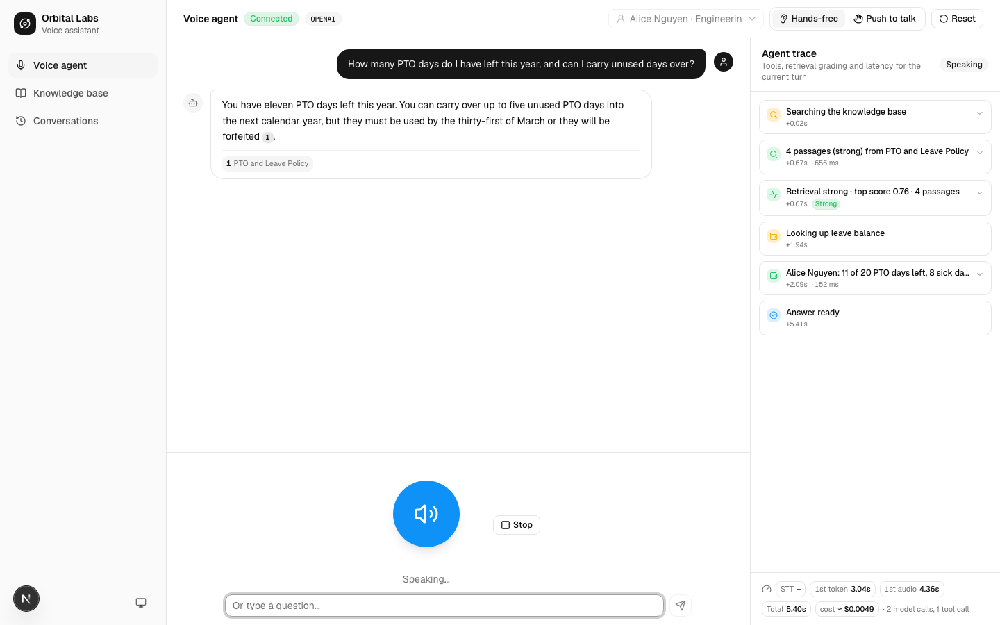
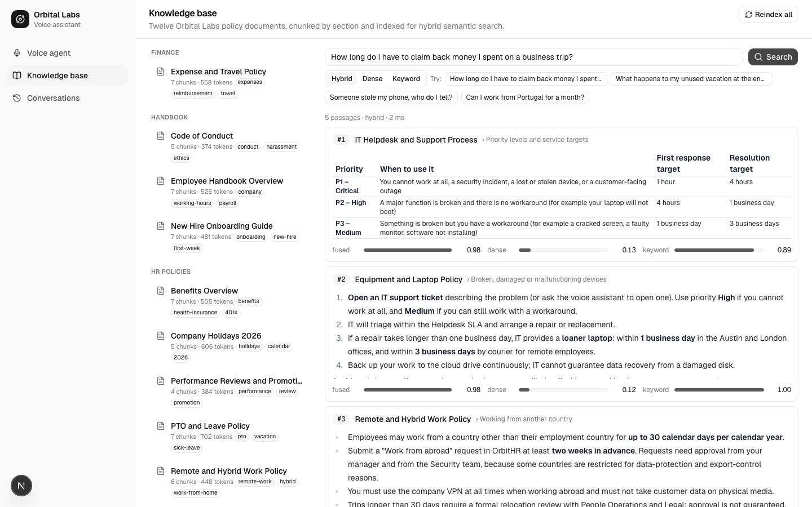
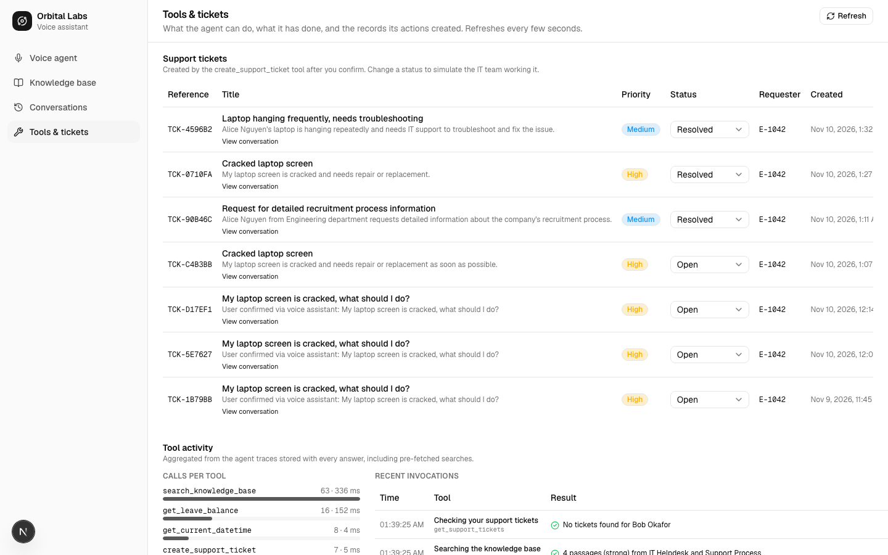

A voice-to-voice AI assistant with hybrid retrieval-augmented generation, semantic search, agentic tool use and full observability. Architecture, flows, diagrams and the complete feature list.
The Orbital Voice Agent lets an employee talk to an assistant that answers from a company handbook, uses tools when it needs facts the handbook cannot give (dates, balances, arithmetic) or when it must act (open a ticket), and talks back. Every answer is grounded in cited passages, every step of the agent's reasoning is streamed to the screen, and every turn records its latency, token usage and estimated cost.
The system is a cascaded pipeline (speech-to-text → agent → text-to-speech) rather than a single speech-to-speech model, so the retrieval, grading, tool orchestration and citations live in this codebase where they can be tested, traced and demonstrated. Latency is recovered with on-device voice activity detection, eager retrieval before the first model call, concurrent tool execution and streamed speech synthesis.
The browser owns capture, playback and presentation. The API owns the session, the turn pipeline, the agent loop, retrieval, tools and persistence. OpenAI provides the models behind three ports; Postgres stores vectors, full-text indexes, conversations and tickets; Redis backs the ingestion queue.
flowchart TB
classDef browser fill:#e8efff,stroke:#1f5eff,color:#16181d;
classDef api fill:#ffffff,stroke:#5d6470,color:#16181d;
classDef ext fill:#fff3d6,stroke:#9a6400,color:#16181d;
classDef data fill:#e4f5ec,stroke:#137a4a,color:#16181d;
VAD["Browser · Silero VAD → 16 kHz WAV"]:::browser
UI["Browser · transcript · trace · latency & cost · dashboards"]:::browser
AQ["Browser · ordered audio queue (PCM) → speaker"]:::browser
GW["Socket.IO /voice gateway · REST controllers"]:::api
PIPE["Voice turn pipeline"]:::api
AG["Agent runtime · eager retrieval · ReAct loop"]:::api
TX["Tool executor · concurrent · timeouts"]:::api
RET["Retrieval service · dense + BM25 → weighted RRF"]:::api
HR["Mock HR system"]:::api
ING["BullMQ ingestion worker"]:::api
STT["OpenAI STT · gpt-4o-transcribe"]:::ext
LLM["OpenAI LLM · gpt-4.1-mini"]:::ext
TTS["OpenAI TTS · gpt-4o-mini-tts · PCM stream"]:::ext
PG[("Postgres 17 · pgvector · tsvector · conversations · tickets")]:::data
RD[("Redis · BullMQ")]:::data
VAD -- "audio.submit" --> GW
GW -- "events" --> UI
GW --> PIPE
PIPE --> STT
PIPE --> AG
PIPE --> TTS
TTS -- "agent.audio" --> AQ
AG --> LLM
AG --> TX
TX --> RET
TX --> HR
RET --> PG
AG --> PG
GW --> ING
ING --> RD
ING --> PG
flowchart LR
subgraph Dev["docker compose"]
PG[("postgres: pgvector/pgvector:pg17
host port 5434")]
RD[("redis:7-alpine
port 6379")]
end
API["apps/api · NestJS
:4000 /api, /api/docs, /voice"] --> PG
API --> RD
WEB["apps/web · Next.js
:3000"] -- "REST + WebSocket" --> API
API -- "HTTPS" --> OAI["OpenAI
chat · embeddings · transcription · speech"]
pnpm bootstrap starts the containers, migrates, seeds and indexes; pnpm dev runs both apps.voice-rag-agent/
├─ apps/api NestJS: common/ (config, database, queue, logging) · modules/ (openai, embeddings, llm,
│ speech, knowledge, hr, tools, conversations, agent, voice, health)
├─ apps/web Next.js: app/ routes · components/ (voice, transcript, trace, knowledge,
│ conversations, tools, layout, ui) · features/ (voice-session, audio, knowledge, …) · lib/
├─ packages/contracts Zod schemas → DTO types · socket event map · tool argument schemas · personas
├─ packages/config shared tsconfig / ESLint bases
├─ docker/ Postgres + pgvector, Redis
└─ scripts/ bootstrap, infra checksEvery NestJS module has the same shape, and every folder exports through an index.ts barrel:
| Layer | Responsibility | Examples |
|---|---|---|
| Presentation | Validate DTOs, map to and from contracts, no business logic | KnowledgeController, ToolsController, VoiceGateway |
| Application | Use-cases and orchestration | AgentRuntime, VoiceTurnPipeline, IngestionService, RetrievalService |
| Domain | Pure logic and ports | DocumentChunker, reciprocalRankFusion, bm25, RetrievalEvaluator, Tool, LlmProvider, SttProvider, TtsProvider |
| Infrastructure | Adapters and repositories | Drizzle repositories, OpenAI adapters, mock adapters, BullMQ processor |
flowchart TB
subgraph contracts["packages/contracts (Zod)"]
SCH["schemas · DTO types · socket events · tool args"]
end
subgraph api["apps/api"]
CTRL["Controllers / Gateway"] --> SVC["Services"]
SVC --> DOM["Domain: chunking · fusion · BM25 · grading · tools · ports"]
SVC --> REPO["Repositories (Drizzle)"]
DOM --> ADP["Adapters: OpenAI · Mock"]
end
subgraph web["apps/web"]
FEAT["features: voice-session · audio · knowledge · conversations · tools"] --> COMP["components"]
FEAT --> APIC["typed API + socket client"]
end
SCH --> CTRL
SCH --> APIC
SCH -. "createZodDto → validation + OpenAPI" .-> CTRL
sequenceDiagram
autonumber
participant U as User
participant B as Browser
participant G as Gateway
participant P as Pipeline
participant A as Agent
participant T as Tools
participant O as OpenAI
U->>B: speaks
B->>B: VAD detects end of speech (~0.65 s silence)
B->>G: audio.submit (WAV, duration)
G->>P: run turn (abort signal)
P->>O: transcription
P-->>B: transcript.user · turn.state thinking
P->>A: run(userText, history, persona)
A->>A: eager retrieval (hybrid search, grade)
A-->>B: agent.tool.call / result / retrieval.evaluated
A->>O: chat completion (stream, tools)
alt model requests tools
A-->>B: agent.tool.call ×N
A->>T: execute all N concurrently
T-->>A: results (+ retrieval grade)
A-->>B: agent.tool.result ×N
A->>O: next step
end
A-->>P: text deltas
P-->>B: agent.text.delta
P->>O: speech (PCM stream) per sentence
P-->>B: agent.audio seq 0 part 0 …
B->>U: plays chunks gaplessly
P-->>B: turn.completed (message, sources, steps, metrics)
G-->>B: turn.state idle
A typed turn follows the same path from step 7 on (through text.submit on the socket, or the non-streaming POST /api/agent/turn used by tests). Cancellation (barge-in, reset, disconnect) aborts the signal; the runtime stops the model stream, the executor stops waiting for tools, and the speech scheduler drops queued chunks.
flowchart TD
S([turn starts]) --> H["load history (4k-token window) + persona"]
H --> Q{"looks like a question?"}
Q -- yes --> E["eager retrieval: hybrid search of the raw message"]
E --> GR["grade: strong / weak / none"]
GR --> INJ["inject passages (or 'nothing found') as a system message"]
Q -- no --> M
INJ --> M["stream a model step
system prompt · history · passages · tools"]
M --> TC{"tool calls requested?"}
TC -- no --> ANS["final text → resolve [n] citations → renumber → strip for speech"]
TC -- yes --> EX["execute all calls concurrently
Zod-validated args · timeouts · abort"]
EX --> R["append results as tool messages
search results carry a grade + guidance"]
R --> B{"step budget left?"}
B -- yes --> M
B -- no --> FB["graceful fallback answer"]
ANS --> P["persist user + assistant messages
sources · steps · metrics · cost"]
FB --> P
P --> D([turn.completed])
AgentRuntime.run(). Every box emits typed events consumed by the REST endpoint and the voice gateway.The system prompt encodes the policy: ground every policy statement in passages and cite them; reformulate once on a weak grade; say so and point to People Operations or the helpdesk on none; use tools instead of guessing dates or arithmetic; call independent tools together; offer to open a ticket when a policy says so and act on a clear yes; speak in short plain sentences with no markdown.
flowchart LR MD["markdown +
front-matter"] --> SEC["sections
by heading"] SEC --> CH["chunks ≤ 400 tokens
sentence overlap
tiny sections merged"] CH --> HDR["contextual header
Document › Section"] HDR --> EMB["text-embedding-3-small"] EMB --> PGV[("chunks.embedding
HNSW cosine")] CH --> TSV[("chunks.tsv
generated tsvector · GIN")]
flowchart LR Q["query phrasing
(1–3 per search)"] --> QE["embed"] --> DENSE["top-k by
cosine (HNSW)"] Q --> QL["lexemes via
to_tsvector"] --> CAND["GIN
candidates"] --> BM["BM25
IDF + length norm"] DENSE --> RRF["weighted RRF
k = 60 · keyword 0.7"] BM --> RRF RRF --> GRADE["grade
strong / weak / none"] --> OUT["ranked passages
fused · dense · keyword scores"]
Evaluation with nineteen paraphrased questions (pnpm eval:retrieval):
| mode | hit@1 | hit@3 | MRR | mock vectors hit@1 / hit@3 / MRR |
|---|---|---|---|---|
| hybrid | 0.89 | 0.94 | 0.92 | 0.89 / 0.94 / 0.91 |
| dense | 0.94 | 1.00 | 0.96 | 0.72 / 0.89 / 0.81 |
| keyword (BM25) | 0.72 | 0.89 | 0.79 | 0.67 / 0.89 / 0.78 |
With real embeddings the dense channel alone is already excellent on paraphrases; hybrid matches it at hit@3 and keeps exact-term robustness (ticket references, product names, numbers). With the lexical mock vectors, fusion clearly beats either channel.
Employee Handbook Overview · PTO and Leave Policy · Company Holidays 2026 · Remote and Hybrid Work Policy · Expense and Travel Policy · IT Security Policy · Equipment and Laptop Policy · Benefits Overview · New Hire Onboarding Guide · IT Helpdesk and Support Process · Code of Conduct · Performance Reviews and Promotions. Topics deliberately absent (pets, equity, relocation, visas) exercise the "insufficient information" behaviour.
| Tool | What it does | Side effects | Where its effect is visible |
|---|---|---|---|
search_knowledge_base | Hybrid search for 1–3 phrasings; returns graded, numbered passages with guidance | none | Trace (grade, passages), citation chips, sources sheet |
get_current_datetime | Date, weekday and time in the user's timezone | none | Trace result summary |
count_business_days | Working days in a range minus the holidays the agent looked up | none | Trace: "9 weekdays − 3 holidays = 6 business days" |
calculate | Sandboxed arithmetic (mathjs with code-execution functions removed) | none | Trace result summary |
get_leave_balance | PTO and sick balance from the simulated HR system; defaults to the current persona | none | Trace; HR cards on the Tools page |
get_support_tickets | The user's tickets with status and priority, fetched over HTTP from the ticketing REST API (TICKETING_API_URL; this app's own /api/hr by default, in-process in tests) | none | Trace; matches the Tools & tickets table |
create_support_ticket | Opens a ticket after explicit confirmation; returns a TCK-reference | writes | Tools & tickets page (status editable), GET /api/hr/tickets |
Tools implement one interface (name, description, Zod argument schema, timeout, mutating flag, execute). The registry converts schemas to JSON Schema for the model and the executor validates arguments before running anything. The Tools & tickets page shows the catalogue exactly as the model sees it, aggregated usage from stored traces, the tickets table and the HR balances.
erDiagram
documents ||--o{ chunks : "has"
conversations ||--o{ messages : "has"
conversations ||--o{ support_tickets : "created in"
documents {
uuid id PK
varchar slug UK
varchar title
varchar category
jsonb tags
text content
varchar checksum
varchar embedding_model
}
chunks {
uuid id PK
uuid document_id FK
int ordinal
text section_path
text content
text embedded_text
int token_count
vector embedding "1536, HNSW"
tsvector tsv "generated, GIN"
}
conversations {
uuid id PK
varchar title
jsonb user_context
text summary
}
messages {
uuid id PK
uuid conversation_id FK
varchar role
text content
jsonb sources
jsonb steps
jsonb metrics "latency, tokens, cost"
}
support_tickets {
uuid id PK
varchar reference UK
uuid conversation_id FK
varchar requester_employee_id
varchar priority
varchar status
}
| Method | Path | Purpose |
|---|---|---|
| GET | /api/health | liveness, provider, dependency checks |
| GET | /api/knowledge/documents[/:id] | documents with chunk statistics; full content and sections |
| POST | /api/knowledge/search | hybrid / dense / sparse search with scores |
| POST | /api/knowledge/reindex?force= · /api/knowledge/documents | queue indexing jobs · upload a markdown document |
| GET | /api/knowledge/jobs[/:id] | ingestion job status |
| POST | /api/agent/turn | one non-streaming text turn |
| GET/POST/DELETE | /api/conversations[/:id] | history with transcripts, sources, traces, metrics |
| GET | /api/tools · /api/tools/usage | tool catalogue with schemas · usage statistics and recent invocations |
| GET/PATCH | /api/hr/tickets?requesterEmployeeId=&status=&reference= · /api/hr/tickets/:id/status · /api/hr/employees[/:id/leave-balance] | tickets created by the agent (filterable; backend of the ticket-lookup tool) · mock HR data |
Socket.IO namespace /voice (typed in packages/contracts): client → server session.start, audio.submit, text.submit, turn.cancel, conversation.reset; server → client session.ready, turn.state, transcript.user, agent.text.delta, agent.tool.call, agent.tool.result, agent.retrieval.evaluated, agent.audio (seq, part, final, PCM), turn.completed, turn.error (with a fatal flag). OpenAPI documentation is served at /api/docs.
| Stage | Technique |
|---|---|
| End of speech | Silero VAD in the browser, ~650 ms trailing silence; speech segment only |
| Speech-to-text | gpt-4o-transcribe (≈1.0 s in benchmark vs 1.4–2.2 s for the mini model, +$0.003/min) |
| Eager retrieval | ~0.3 s before the first model call; saves a whole model round for most questions |
| First token | non-reasoning model, compact prompt, streaming, 400-token reply cap; ~1.0–1.5 s per call incl. network |
| Tools | concurrent execution; dense and keyword channels in parallel inside Postgres |
| First audio | sentence-level pipelining; raw PCM streamed from the first ~100 ms of audio (≈0.8 s after synthesis starts) |
| Measured turn (OpenAI mode, ~0.3 s network RTT per call) | Model calls | First token | First audio | Total | Est. cost |
|---|---|---|---|---|---|
| Typed policy question with carry-over follow-up | 1 | 1.4 s | – | 1.9 s | $0.0009 |
| December leave: holidays + balance + day count | 2 | 2.8 s | – | 3.4 s | $0.0021 |
| "Can I bring my dog?" → weak grade → reformulate → abstain | 2 | 3.0 s | – | 3.3 s | $0.0014 |
| Spoken question, 6 s utterance (STT 1.3 s) | 1 | 3.1 s | 4.5 s | 6.0 s | $0.005 |
| Cost component | Price basis | Typical |
|---|---|---|
Chat (gpt-4.1-mini) | $0.40 / 1M input ($0.10 cached) · $1.60 / 1M output | $0.001–0.002 per turn |
Speech-to-text (gpt-4o-transcribe) | $0.006 / minute | $0.0006 per 6 s utterance |
Text-to-speech (gpt-4o-mini-tts) | ≈ $0.015 / minute of speech | $0.004 per 60-word reply |
Embeddings (text-embedding-3-small) | $0.02 / 1M tokens | negligible; whole knowledge base ≈ $0.0002 |
Levers that keep cost low: eager retrieval, the reply cap, a 4 000-token history window, OpenAI's automatic prompt caching (the stable prefix is billed at a quarter price), no LLM reranker by default, and mock providers in every automated test.
| Suite | Covers |
|---|---|
| API unit (Jest, 71) | chunking, RRF, BM25, grading, tool registry/executor, tools, mock providers, memory, citations, prompt, agent loop with a scripted model (single step, concurrent tools, eager retrieval, weak → reformulate, failure recovery, step budget, cancellation), sentence chunker, streamed speech scheduler, voice pipeline |
| API e2e (Jest + supertest + socket.io-client, 20) | knowledge endpoints on a real Postgres, agent turns with memory and a confirmed ticket, personas, tools and HR endpoints, the Socket.IO gateway with ordered audio |
| Contracts + web unit (Vitest, 13) | schema defaults and tool-name coverage, session store state machine, ordered audio queue incl. raw PCM, WAV encoder |
| Browser e2e (Playwright, 7) | knowledge search and viewer, agent text turns with citations and trace, multi-turn confirmed action, conversations, theme, tools dashboard, and a hands-free voice turn with Chromium's fake microphone fed a synthesized utterance |
CI (GitHub Actions) runs lint, typecheck, unit, API e2e and the browser suite with Postgres and Redis service containers, all in mock mode.
| Variable | Default | Effect |
|---|---|---|
AI_PROVIDER | auto | openai when a key is present, otherwise mock |
OPENAI_CHAT_MODEL / OPENAI_EMBEDDING_MODEL | gpt-4.1-mini / text-embedding-3-small | reasoning model and vector model (documents remember their embedding model) |
OPENAI_STT_MODEL / OPENAI_TTS_MODEL / OPENAI_TTS_VOICE | gpt-4o-transcribe / gpt-4o-mini-tts / coral | speech models and voice |
AGENT_MAX_STEPS · AGENT_MAX_OUTPUT_TOKENS · AGENT_EAGER_RETRIEVAL | 6 · 400 · true | loop budget, reply cap, pre-fetch |
RETRIEVAL_TOP_K · RETRIEVAL_SPARSE_WEIGHT · RERANK_ENABLED | 5 · 0.7 · false | passages per search, keyword weight in fusion, optional reranker |
TICKETING_API_URL | this API's /api/hr | ticketing REST API the ticket-lookup tool calls (inprocess in tests) |
DATABASE_URL · REDIS_URL · DB_MIGRATE_ON_START | compose defaults | infrastructure |
Commands: pnpm bootstrap (idempotent setup), pnpm dev, pnpm build / lint / typecheck / test, pnpm db:seed, pnpm eval:retrieval, pnpm --filter @voice-agent/api bench:speech, pnpm infra:up / infra:down / infra:reset.
ts_rank has no rarity term; BM25 lifted hybrid hit@1 from 0.83 to 0.89 with real embeddings.

